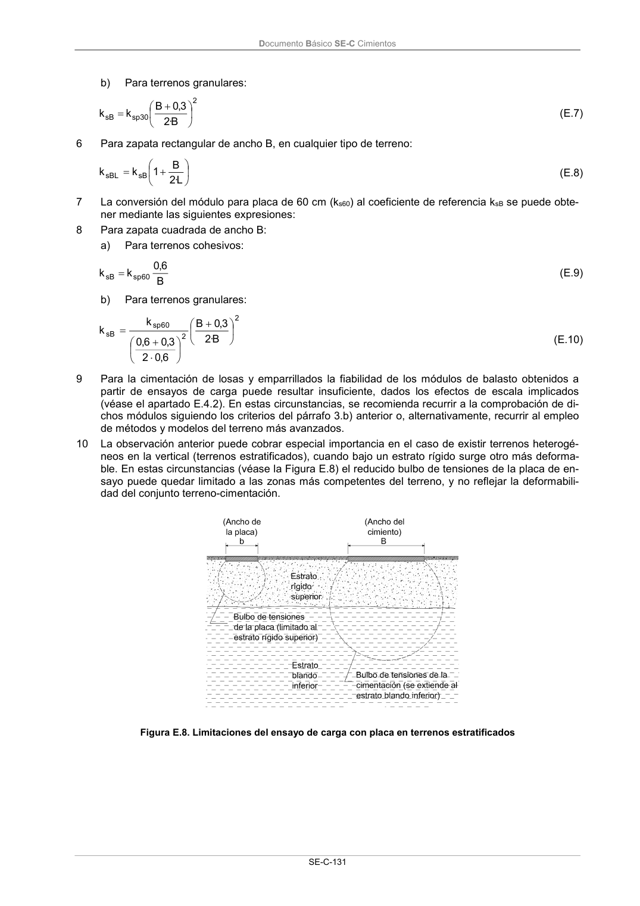

DB-SE-C Cimientos · edición 2019-12-20 · capa oficial
Documento DB-SE-C-oficial · SHA-256 del PDF a71133f4b0dca253e45ea3071c70f2a512354bcc5cd841bf89b1a502f567ac5e
Página física 136 de 165.
Copia fiel del PDF fuente · Fuente oficial
Ficha de la disposición en la fuente oficial
Formato: Texto de la página (Markdown)
Documento Básico SE-C Cimientos SE-C-131 b) Para terrenos granulares: 2 30 sp sB B · 2 3,0 B k k (E.7) 6 Para zapata rectangular de ancho B, en cualquier tipo de terreno: L· 2 B 1 k k sB sBL (E.8) 7 La conversión del módulo para placa de 60 cm (ks60) al coeficiente de referencia ksB se puede obte- ner mediante las siguientes expresiones: 8 Para zapata cuadrada de ancho B: a) Para terrenos cohesivos: B 6,0 k k 60 sp sB (E.9) b) Para terrenos granulares: 2 2 60 sp sB B · 2 3,0 B 6,0 2 3,0 6,0 k k (E.10) 9 Para la cimentación de losas y emparrillados la fiabilidad de los módulos de balasto obtenidos a partir de ensayos de carga puede resultar insuficiente, dados los efectos de escala implicados (véase el apartado E.4.2). En estas circunstancias, se recomienda recurrir a la comprobación de di- chos módulos siguiendo los criterios del párrafo 3.b) anterior o, alternativamente, recurrir al empleo de métodos y modelos del terreno más avanzados. 10 La observación anterior puede cobrar especial importancia en el caso de existir terrenos heterogé- neos en la vertical (terrenos estratificados), cuando bajo un estrato rígido surge otro más deforma- ble. En estas circunstancias (véase la Figura E.8) el reducido bulbo de tensiones de la placa de en- sayo puede quedar limitado a las zonas más competentes del terreno, y no reflejar la deformabili- dad del conjunto terreno-cimentación. Figura E.8. Limitaciones del ensayo de carga con placa en terrenos estratificados
